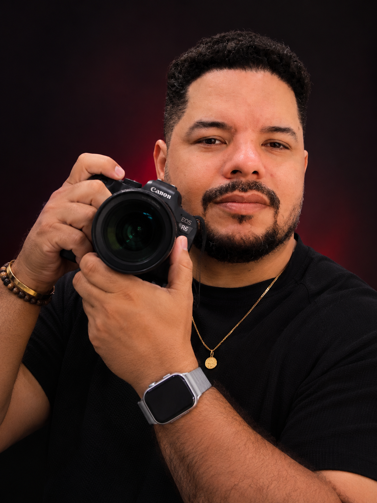

Fotografia autoral · São Luís, MAHistórias em
Histórias em
imagens.
THIAGO AQUINO — FOTOGRAFIA
Trabalhos selecionados
O portfólio.
Momentos reais. Fotografias que permanecem.

POR TRÁS DA LENTEPor trás da lente · Thiago AquinoA fotografia vai
A fotografia vai
além do clique.
Gosto de encontrar beleza no que acontece de verdade: nos gestos espontâneos, nos encontros e nos detalhes que tantas vezes passam despercebidos.
Minha fotografia nasce desse olhar atento, para transformar instantes em lembranças que continuam vivas.
THIAGO AQUINOFOTOGRAFIA AUTORAL · SÃO LUÍS, MA
Vamos fotografar?Sua história merece